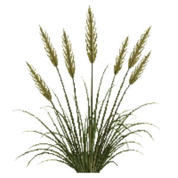

Korean Feather Reed Grass
Calamagrostis brachytricha

Korean Feather Reed Grass is a grass for focal point, mid-border, structure, suited to full sun to partial shade and clay or loam, flowering Aug, Sep, Oct.
| Type | Grass |
|---|---|
| Mature height | 120 cm |
| Spread | 75 cm |
| Aspect | full sun to partial shade |
| Foliage | Deciduous |
| Hardiness | USDA 4a-9b |
| Pollinator-friendly | No |
| Pet-safe | Yes |
Where to use it in a border
At around 120 cm, it sits best toward the back of a border, or on its own as a focal point with room around it. Give it about 75 cm of room to spread. It is hardy across USDA zones 4a to 9b, so check it suits your area before planting.
It appears in our lists of full sun, clay soil, pet-safe plants.
Flowering through the year
Good companions
Plants that share its conditions and style, chosen to complement its place in the border:
- Panicle Hydrangea 'Bobo'to flower when it does not
- Panicle Hydrangea 'Little Lime'to flower when it does not
- Panicle Hydrangea 'Quick Fire'for height behind it
- Abelia 'Rose Creek'to edge in front
- African Daisyto edge in front
- Angeloniato edge in front
Garden styles
Foundation planting Meadow Modern
See Korean Feather Reed Grass set in a full border, with spacing and companions worked out for your own conditions, in Border Builder.
Sources
Bloom timing and hardiness drawn from:
- NC State Extension (plants.ces.ncsu.edu, 2026-05)
- MoBot Plant Finder (missouribotanicalgarden.org, 2026-05)